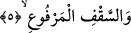
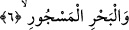

hattâ hiç yok gibidir.
5. Yükseltilmiş tavana (göğe)
Yâni yerden beş yüz yıllık mesafede yükseltilmiş semâya (andolsun.) Burada
kullanılan “sakf” kelimesi “Göğü korunmuş bir tavan yaptık... (el-Enbiyâ 21/32)
âyetinde de geçmektedir.
Kâşifî şöyle demiştir: Yâni semâ/âsumân, hikmet nurlarının toplanma yeri ve fıtrat
sırlarının mahzenidir veya arş-ı azîmdir.
Bunun nedenine gelince, çünkü arş cennetin tavanıdır. Nasıl ki evin tavanı duvarlarla
çevrili ise arş da cisimler âlemiyle çevrilidir. Yukarıda zikredilen tavan başlığının
getirilmesi, evin tavanına benzetilmesi açısından hiç de gizli olmayan bir hüsn-i kelâm
oluşturmakta ve bu nedenle de ikinci takdire göre arş ve Beyt-i Ma’mur, evin çatısı gibi
bir birliktelik arzetmektedir.
6. Dolu denize andolsun ki:
“el-Bahru’l- Mescûr”, dolu deniz demektir ki bu da birleşik ve ayrı tüm denizlerin
nüvesini kendisinde taşıyan, sâhili asla bilinmeyen, derinliğini ancak Allah Teala’nın
bildiği büyük okyanustur. Yeryüzündeki denizler onun körfezleridir. Bu okyanusta
İblis’in kürsüsü vardır. Yine bu okyanus üzerinde yüzen şehirler bulunmakta olup
burada cin taifesi yaşamaktadır. Buranın alanı, yeryüzünün harap olan dörtte biri
kadardır. Burada su yüzeyinde önce ortaya çıkıp sonra batan saraylar ve bu saraylarda
görünen ve daha sonra gözden kaybolan acaip ve garip suretler, şekiller bulunmaktadır.
Bu okyanusta, yeryüzündeki diğer ağaçlar gibi ağaçların yanı sıra mercan ağacı da
bitmekte ve orada künhünü ancak Allah’ın bildiği meskûn ve metrûk adalar
bulunmaktadır.
Kâmus’ta “el-Mescûr”a muvakked/tutuşturulmuş, kaynaştırılmış mânâsı verilerek
bununla durgun suyun zıddı ve durgun sudan fazla olan su îmâ edilmiştir.
Bazı müfessirler “tutuşturulmuş denizden” muradın “Denizler kaynatıldığı
zaman” (et-Tekvîr 81/6) âyetindeki mânâ ile aynı olduğunu, dolayısıyla âyette geçen
“bahr/deniz” kelimesinin, tüm deniz cinsini içine aldığını beyân etmektedir. Büyük
nehirlerin sayısı da büyük denizlerin sayısı da yedidir. Suyu fazla olan her yer, deniz
niteliği taşır.